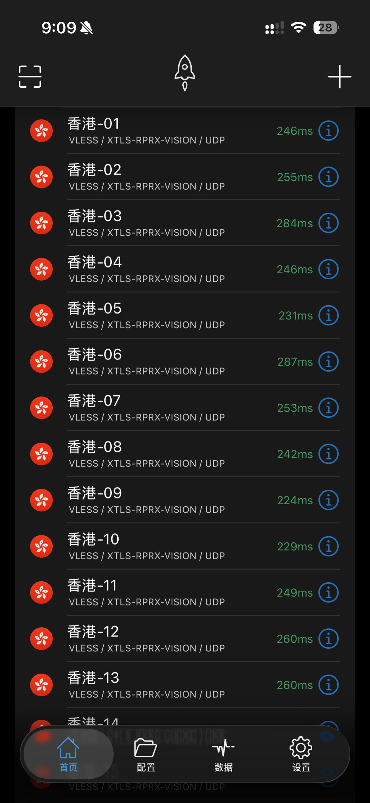

たたなこ
@tatanakots
@Dashi233M10553 因为我劫持了他们专用客户端的配置文件

たたなこ
@tatanakots
终于可以继续用shaowrocket了而不用使用他们定的客户端了，那个破客户端添加自定义分流策略的方法真的很难用，而且莫名觉得他们定的那个客户端待机耗电很大
能继续使用之前积累到现在的分流策略真是太棒了！😋 https://t.co/2KHOMm0y1e
DaShi233 Meng
@Dashi233M10553
@tatanakots @CyronANNO 这不还是通用的Shadow Rocket吗